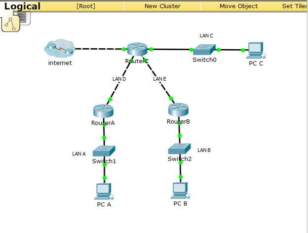

Лабораторная работа №1
Экосистема разработки программ с открытым кодом (github):
Создание персональной страницы-отчета на GitHub и работа с git.
Открыть задачи- Регистрация на GitHub.
- Создание репозитория.
- Добавление описания лабораторных работ.
- Размещение кода исходной страницы в репозитории.
- Создать персональную веб страницу-отчет.
- Загрузить персональную веб страницу-отчет на хостинге
Лабораторная работа №2
Разработка Web-приложения
В рамках 2 лабораторной работы планируется разработать веб-приложение
Открыть функциональность приложения- Работа с электронной подписью (ЭП):
- создание ЭП;
- простановка подписи ЭП на файл;
- проверка подписи ЭП по ее открытому ключу;
- удаление подписи ЭП.
- Шифрование/р асшифровка файлов.
- Онлайн-чат между зарегистрированными пользователями (обмен сообщениями, файлами, картинками).
- Собрать команду для разработки веб-приложения и распределить роли. Landing Page
- Сделать разметку страницы по макету Описание проекта
Лабораторная работа №3
Статическая маршрутизация
Настройка коммутаторов и маршрутизаторов
Открыть отчетЦель данной работы – изучения технологий и протоколов статической маршрутизации и суммирования маршрутов и представляет собой сценарий для Cisco Packet Tracer

Расчет диапазонов подсетей.
| LAN A | LAN B | LAN C | LAN D | LAN E | |
|---|---|---|---|---|---|
| Количество хостов в сети | 69 | 15 | 67 | 4 | 4 |
| Префиксная маска | /16 | /16 | /16 | /30 | /30 |
| Адрес подсети | 106.144.0.0 | 106.145.0.0 | 106.146.0.0 | 192.168.6.0 | 192.168.6.4 |
| Адрес первого хоста | 106.144.0.1 | 106.145.0.1 | 106.146.0.1 | 192.168.6.1 | 192.168.6.5 |
| Адрес последнего хоста | 106.144.0.126 | 106.145.0.14 | 106.146.3.254 | 192.168.6.2 | 192.168.6.6 |
| Broadcast | 106.144.0.127 | 106.145.0.15 | 106.146.3.255 | 192.168.6.2 | 192.168.6.6 |
Расчет адресов устройств.
| Устройство | IP | Маска | Шлюз по умолчанию |
|---|---|---|---|
| PC0 | 106.144.0.126 | 255.255.255.128 | 106.144.0.1 |
| PC1 | 106.145.0.14 | 255.255.255.240 | 106.145.0.1 |
| PC2 | 106.146.3.254 | 255.255.255.0 | 106.146.0.1 |